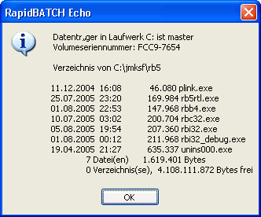

Programme starten
Oftmals ist es gerade in der Batch-Programmierung notwendig, externe Programme zu starten, um bestimmte Vorgehensweisen und Methoden, die zu einem Ergebnis führen, zu automatisieren.
Um Programme zu starten, bietet Ihnen RapidBATCH gleich vier verschiedene Möglichkeiten an. Klassische Methode zum Starten einer Anwendung ist die SHELL-Anweisung. Sie führt ein Programm parallel zum RapidBATCH-Script aus, d.h. das Script selbst läuft parallel zum gestarteten Programm weiter. SHELL erwartet als Parameter den Pfad des zu startenden Programms (der auch Kommandozeilen-Parameter beinhalten kann) sowie einen so genannten Anzeigemodus (Show-Mode), der angibt, wie das Programm gestartet werden soll.
Der Anzeigemodus ist nur für einige Windows-Programme interessant, nicht alle Programme unterstützen diese Möglichkeit. Als Anzeigemodi können hier die Were 'SHOW', 'HIDE', 'MINIMIZED' oder 'MAXIMIZED' angegeben werden; 'SHOW' startet ein Programm mit der normalen Fenstergröße, 'HIDE' startet es versteckt, d.h. nicht sichtbar, womit die 'HIDE'-Option für Konsolenprogramme und Batch-Jobs sehr interessant ist, da diese somit unsichtbar im Hintergrund und ohne ein DOS-Fenster ausgeführt werden können. Die Modi 'MINIMIZED' und 'MAXIMIZED' starten das Programm mit einem minimierten bzw. maximierten Programmfenster. Diese beiden Werte sind jedoch - wie bereits angesprochen - nur bei bestimmten Programmen anwendbar.
Folgendes Script starten den Editor "Notepad" von Windows:
shell 'notepad.exe', 'show'
echo 'Und jetzt starten wir Notepad maximiert...'
shell 'notepad.exe', 'maximized'
echo 'Ende!'
end
Neben der SHELL-Anweisung bietet RapidBATCH auch die CALL-Anweisung. CALL ist von den Parametern her identisch zu SHELL, hat aber die Eigenschaft, dass das RapidBATCH-Script, welches die Anwendung mit CALL aufgerufen hat, solange mit der Programmausführung wartet, bis das gestartete Programm abgearbeitet oder vom Benutzer beendet wurde.
Hier einmal unser Beispiel von oben, welches aber mit CALL arbeitet:
call 'notepad.exe', 'show'
echo 'Und jetzt starten wir Notepad maximiert...'
call 'notepad.exe', 'maximized'
echo 'Ende!'
end
Oftmals ist auch die Verwendung von MS-DOS-Konsolenkommandos einfach unabdingbar. Zur schnellen Ausführung eines Konsolenkommandos bietet RapidBATCH die SYSTEM-Anweisung. Als Parameter wird das entsprechene Kommando erwartet.
Beispiel:
rem Ping an www.jmksf.de schicken
system 'ping www.jmksf.de'
end
Mit CALL bzw. SHELL lassen sich DOS-Kommandos auch versteckt ausführen (dieses Beispiel verwendet die Funktion READFILE zum Auslesen der Datei, die wir später detaillierter besprechen werden):
rem dir-Kommando senden und in Datei test.txt umleiten
call 'cmd.exe /C dir *.exe >test.txt', 'hide'
rem test.txt einlesen und ausgeben
readfile [dir_ausgabe] = 'test.txt', '0'
echo [dir_ausgabe]
rem test.txt wieder löschen
delfile 'test.txt'
end

Die Ausgabe des DIR-Befehls, umgeleitet und ausgelesen aus einer Datei
Zur letzten Möglichkeit, externe Programme zu starten, gehört die OPEN-Anweisung. OPEN kann vielseitig eingesetzt werden, beispielsweise kann hier auch anstatt eines Programmpfades der Name einer Datei (die dann mit dem entsprechend verknüpften Programm geöffnet wird) oder eine Internet-URL, die dann im Standard-Browser geladen wird, angegeben werden.
Beispiele:
open 'calc.exe'
open 'C:\jmksf\rb5\license.txt'
open 'http://www.rapidbatch.com'
end
Wenn OPEN zum Starten von Programmen benutzt wird, entspricht dies einem Aufruf von SHELL mit dem Anzeigemodus 'SHOW'.
Copyright © 2000-2006 by J.M.K S.F. Software Technologies, Jan Max Meyer
All rights reserved.